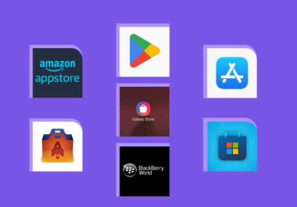

Para el despliegue, las tiendas de apps son la vía principal. Android usa Google Play Console: allí se sube el APK/AAB firmado. También existen alternativas (Amazon Appstore, Huawei AppGallery, repositorios F-Droid en Android Open Source, etc.). En iOS se publica en App Store Connect. Cada plataforma tiene sus requisitos y políticas: por ejemplo, Google Play exige cumplir con lineamientos de contenido y diseño, y calificar por edades; Apple somete la app a revisión más estricta (políticas de privacidad, permisos, calidad gráfica, etc.). Además del canal “abierto” (tiendas públicas), existen escenarios de distribución cerrada o interna: por ejemplo, despliegue interno en una empresa usando sistemas MDM, o distribución beta mediante TestFlight (iOS) o pruebas internas/cerradas en Google Play
En cada caso, es común realizar pruebas previas al despliegue: pruebas funcionales, de interfaz de usuario, compatibilidad (dispositivos con diferentes resoluciones y versiones), etc. Android ofrece por ejemplo Firebase Test Lab para ejecutar tests automatizados en múltiples dispositivos remotos. Se habla de canales de lanzamiento: Google Play distingue pruebas internas, cerradas (grupos de test) y abiertas antes del lanzamiento público. En iOS, TestFlight permite distribuir versiones de prueba. En resumen, el empaquetado y despliegue integran Gradle/Xcode para generar el paquete final (APK/AAB/IPA), firmarlo y enviarlo a la tienda o plataforma elegida, siempre respetando sus guías. El uso de herramientas de línea de comandos (gradlew, xcodebuild, Fastlane) o interfaz gráfica facilita automatizar estos pasos y asegurar que el producto final esté listo para los usuarios.
← Regresar al index